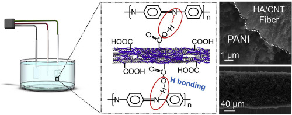
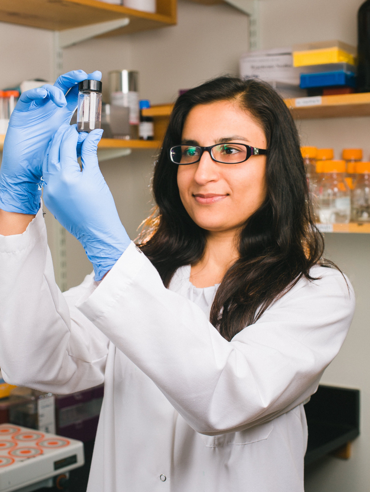
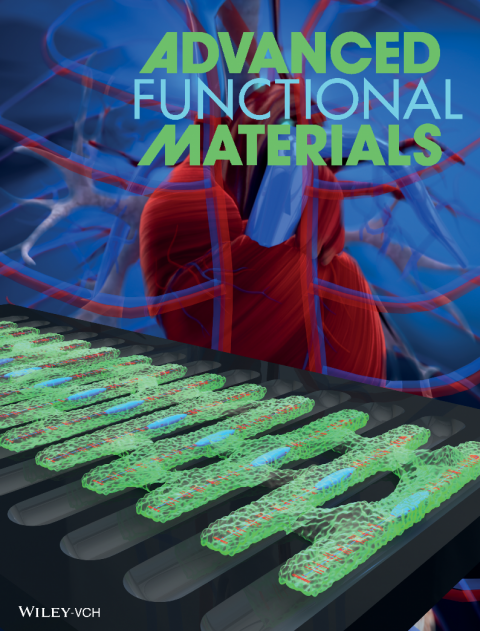
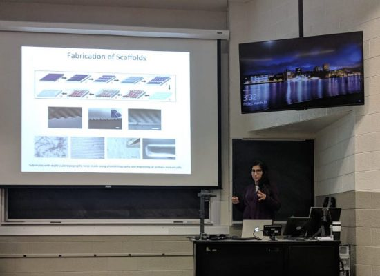
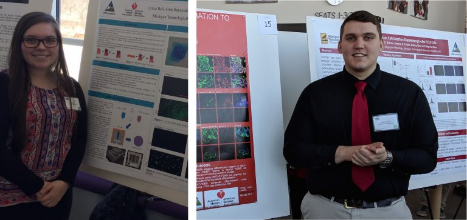
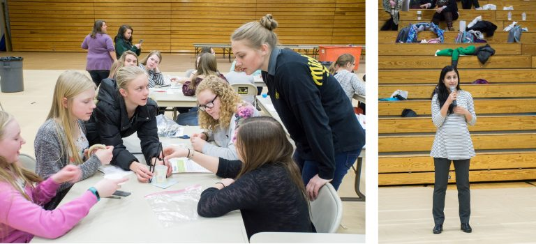

Invited Webinar
November 19'
Dr. Abadi gives an invited webinar on Nanobiotechnology at the School of Engineering and Sciences at Tecnológico de Monterrey.
November 19'
Dr. Abadi gives an invited webinar on Nanobiotechnology at the School of Engineering and Sciences at Tecnológico de Monterrey.
November 19'
Congratulations to Masoud for being awarded a Graduate Student Government Travel Grant to present at TMS 2020 Conference.
November 19'
Our paper entitled "Polyaniline-decorated hyaluronic acid-carbon nanotube hybrid microfiber as a flexible supercapacitor electrode material" is just accepted in Carbon and the pre-proof is available online here.
October 19'
Dr. Abadi's story from childhood to research in medicine was published on Wogrammer. Wogrammer is an organization that publishes stories of real women in tech to inspire girls to STEM. View Link
October 19'
Dr. Abadi attended the Society of Engineering Sciences Annual Meeting (St. Louis, MO) and Biomedical Engineering Society Annual Meeting (Philadelphia, PA). At BMES, she presented on nano-bioactuators and chaired a session on Stem Cell Microenvironment..
April 19'
Amir presented a poster at Materials Research Society spring meeting in Phoenix, AZ.
April 19'
Congratulations to Alicia for another URIP award from Portage Health Foundation. This internship will support her third year of research in our lab during the academic year 2019-2020.
March 19'
Dr. Abadi presented at Virginia Tech Biomedical Engineering and Mechanics Seminar Series.
March 19'
Ph.D. student, Rasoul Bayaniahangar, and Undergraduate students, Alicia Ball and Daniel Woodall, presented posters at the Michigan Tech Graduate Research Colloquium and the Michigan Tech Undergraduate Research Symposium.
February 19'
Dr. Abadi joins the Editorial Board of Nanobiotechnology for Frontiers in Bioengineering and Biotechnology, Frontiers in Materials and Frontiers in Molecular Biosciences.
February 19'
Congratulations to Amir for being awarded a Graduate Student Government Travel Grant to present at MRS spring meeting.
January 19'
Dr. Abadi serves as a guest editor of a special issue of the International Journal of Polymer Science entitled "Syntheses and Biomedical Applications of Functional Polymers". She also serves as a technical committee member of the 9th International Conference on Key Engineering Materials (ICKEM 2019, Oxford, UK, March 29-April 1).
November 18'
Congratulations to Rasoul (Amir) Bayani Ahangar for successfully passing his PhD qualifying exam in the areas of microfabrication and mechanics of materials.
November 18'
Congratulations to Dr. Michael Hill for receiving a postdoctoral fellowship from American Heart Association (AHA). This two-year grant will support his research in our group on cardiovascular tissue engineering using nanotechnologies.
October 18'
Dr. Abadi presents at Biomedical Engineering Society conference in Atlanta, Ga.
August 18'
Congratulations to our undergraduate researchers, Alicia Ball (third year chemical eng.) and Daniel Woodall (fourth year MEEM), for URIP awards through Portage Health Foundation and Pavlis Honors College at Michigan Tech. This internship will support their research in our lab during the academic year 2018-2019.
March 18'
Congratulations to Dr. Abadi and Dr. Hill for publication of their paper in Advanced Functional Materials and featured on the cover. The paper reports novel techniques for using biophysical and biomechanical cues in production of mature cardiomyocytes derived from induced pluripotent stem cells. Read the news about our article and group research in Michigan Tech News, Science Daily, Medical Xpress, News Medical, Technology Network, Bioengineer.org, Science Newsline, Medindia, Drugnews.in, and Medicalnewser.com.
March 18'
Dr. Abadi gave invited talks at the Michigan Tech departments of Biomedical Engineering and Materials Science and Engineering.
March 18'
Undergraduate students, Alicia Ball and Josh Loiselle, presented posters at the Michigan Tech Undergraduate Research Symposium.
February 18'
Dr. Abadi presents STEM activities for middle school girls in Get WISE (Women in Science and Engineering) program organized by the Center for Pre-College Outreach.
October 17'
Congratulations to our undergraduate trainees, Josh Loiselle (third year MEEM) and Alicia Ball (second year chemical eng.), for being selected as Portage Health Foundation Interns through the MTU Undergraduate Research Internship Program. This internship will support their health-related research in our lab during the academic year 2017-2018.
July 17'
Dr. Abadi receives a Scientist Development Grant from the American Heart Association (AHA). For the next three years, this grant will support the group research on development of hierarchical conductive structures for application in cardiovascular medical devices.
July 17'
Abadi Lab is born in the department of Mechanical Engineering-Engineering Mechanics at Michigan Tech.